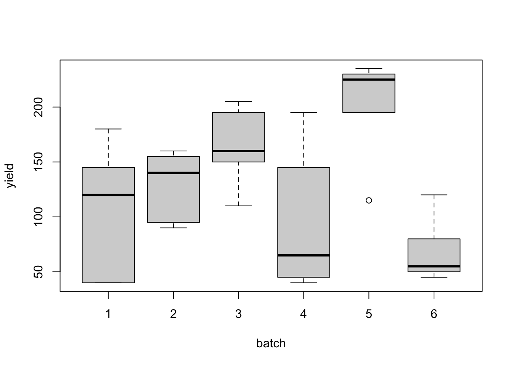
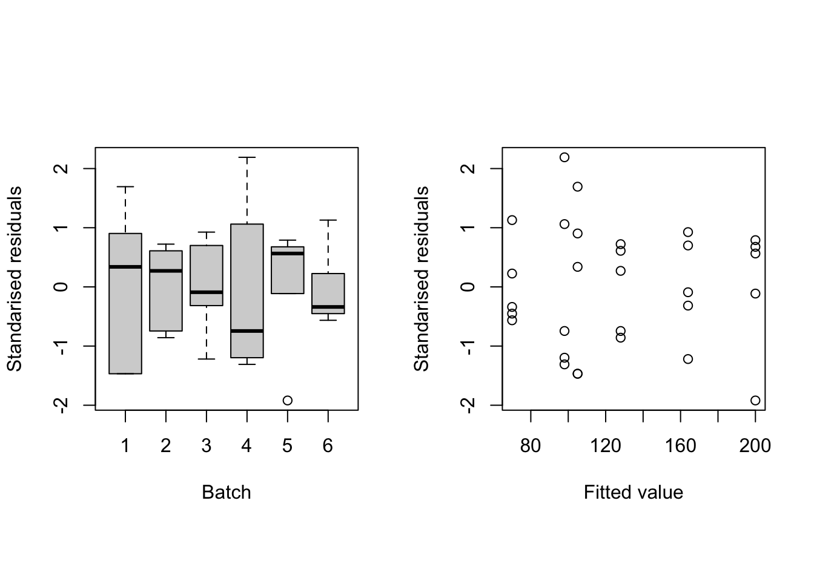
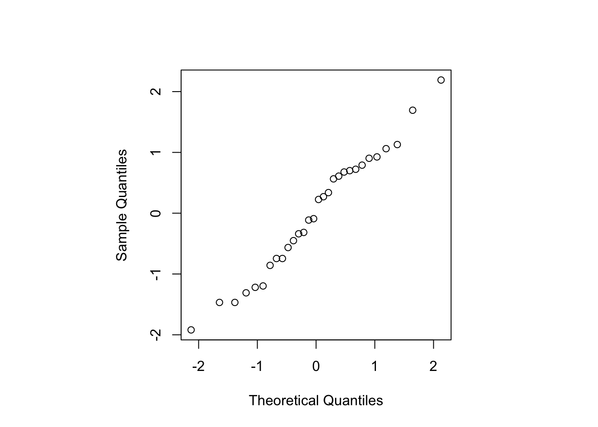

Chapter 2 Completely randomised designs
The simplest form of experiment we will consider compares \(t\) different unstructured treatments. By unstructured, we mean the treatments form a discrete collection, not related through the settings of other experimental features (compare with factorial experiments in Chapter 4). We also make the assumption that there are no restrictions in the randomisation of treatments to experimental units (compare with Chapter 3 on blocking). A designs for such an experiment is therefore called a completely randomised design (CRD).
Example 2.1 Pulp experiment (Wu and Hamada, 2009, ch. 2)
In a paper pulping mill, an experiment was run to examine differences between the reflectance (brightness; ratio of amount of light leaving a target to the amount of light striking the target) of sheets of pulp made by \(t=4\) operators. The data are given in Table 2.1 below.
pulp <- data.frame(operator = rep(factor(1:4), 5),
repetition = rep(1:5, rep(4, 5)),
reflectance = c(59.8, 59.8, 60.7, 61.0, 60.0, 60.2, 60.7, 60.8,
60.8, 60.4, 60.5, 60.6, 60.8, 59.9, 60.9, 60.5, 59.8, 60.0, 60.3, 60.5)
)
knitr::kable(
tidyr::pivot_wider(pulp, names_from = operator, values_from = reflectance)[, -1],
col.names = paste("Operator", 1:4),
caption = "Pulp experiment: reflectance values (unitless) from four different operators."
)| Operator 1 | Operator 2 | Operator 3 | Operator 4 |
|---|---|---|---|
| 59.8 | 59.8 | 60.7 | 61.0 |
| 60.0 | 60.2 | 60.7 | 60.8 |
| 60.8 | 60.4 | 60.5 | 60.6 |
| 60.8 | 59.9 | 60.9 | 60.5 |
| 59.8 | 60.0 | 60.3 | 60.5 |
The experiment has one factor (operator) with four levels (sometimes called a one-way layout). The CRD employed has equal replication of each treatment (operator).
We can informally compare the responses from these four treatments graphically.
boxplot(reflectance ~ operator, data = pulp)Figure 2.1: Pulp experiment: distributions of reflectance from the four operators.
Figure 2.1 shows that, relative to the variation, there may be a difference in the mean response between treatments 1 and 2, and 3 and 4. In this chapter, we will see how to make this comparison formally using linear models, and to assess how the choice of design impacts our results.
Throughout this chapter we will assume the \(i\)th treatment is applied to \(n_i\) experimental unit, with total number of runs \(n = \sum_{i=1}^t n_i\) in the experiment.
2.1 A unit-treatment linear model
An appropriate, and common, model to describe data from such experiments when the response is continuous is given by
\[\begin{equation} y_{ij} = \mu + \tau_i + \varepsilon_{ij}\,, \quad i = 1, \ldots, t; j = 1, \ldots, n_i\,, \tag{2.1} \end{equation}\]
where \(y_{ij}\) is the response from the \(j\)th application of treatment \(i\), \(\mu\) is a constant parameter, \(\tau_i\) is the effect of the \(i\)th treatment, and \(\varepsilon_{ij}\) is the random individual effect from each experimental unit with \(E(\varepsilon_{ij})=0\) and \(\mathrm{Var}(\varepsilon_{ij}) = \sigma^2\). All random errors are assumed independent and here we also assume \(\varepsilon_{ij} \sim N(0, \sigma^2)\).
Model (2.1) assumes that each treatment can be randomly allocated to one of the \(n\) experimental units, and that the response observed is independent of the allocation of all the other treatments (the stable unit treatment value assumption or SUTVA).
Why is this model appropriate and commonly used? The expected response from the application of the \(i\)th treatment is
\[ E(y_{ij}) = \mu + \tau_i\,. \] The parameter \(\mu\) can be thought of as representing the impact of many different features particular to this experiment but common to all units, and \(\tau_i\) is the deviation due to applying treatment \(i\). From the applicable of two different hypothetical experiments, A and B, the expected response from treatment \(i\) may be different due to a different overall mean. From experiment A:
\[ E(y_{ij}) = \mu_{\mathrm{A}} + \tau_i\,. \] From experiment B: \[ E(y_{ij}) = \mu_{\mathrm{B}} + \tau_i\,. \] But the difference between treatments \(k\) and \(l\) (\(k, l = 1,\ldots, t\))
\[\begin{align*} E(y_{kj}) - E(y_{lj}) & = \mu_A + \tau_k - \mu_A - \tau_l \\ & = \tau_k - \tau_l\,, \end{align*}\]
is constant across different experiments. This concept of comparison underpins most design of experiments, and will be applied throughout this module.
2.2 The partitioned linear model
In matrix form, we can write model (2.1) as
\[ \boldsymbol{y}= X_1\mu + X_2\boldsymbol{\tau}+ \boldsymbol{\varepsilon}\,, \] where \(X_1 = \boldsymbol{1}_n\), the \(n\)-vector with every entry equal to one,
\[ X_2 = \bigoplus_{i = 1}^t \boldsymbol{1}_{n_i} = \begin{bmatrix} \boldsymbol{1}_{n_1} & \boldsymbol{0}_{n_1} & \cdots & \boldsymbol{0}_{n_1} \\ \boldsymbol{0}_{n_2} & \boldsymbol{1}_{n_2} & \cdots & \boldsymbol{0}_{n_2} \\ \vdots & & \ddots & \vdots \\ \boldsymbol{0}_{n_t} & \boldsymbol{0}_{n_t} & \cdots & \boldsymbol{1}_{n_t} \\ \end{bmatrix}\,, \] with \(\bigoplus\) denoting “direct sum”, \(\boldsymbol{0}_{n_i}\) is the \(n_i\)-vector with every entry equal to zero, \(\boldsymbol{\tau}= [\tau_1, \ldots, \tau_t]^{\mathrm{T}}\) and \(\boldsymbol{\varepsilon}= [\varepsilon_{11}, \ldots, \varepsilon_{tn_t}]^{\mathrm{T}}\).
Why are we partitioning the model? Going back to our discussion of the role of \(\mu\) and \(\tau_i\), it is clear that we not interested in estimating \(\mu\), which represents an experiment-specific contribution to the expected mean. Our only interest is in estimating the (differences between the) \(\tau_i\). Hence, we can treat \(\mu\) as a nuisance parameter.
If we define \(X = [X_1\, \vert\, X_2]\) and \(\boldsymbol{\beta}^{\mathrm{T}} = [\mu \vert \boldsymbol{\tau}^{\mathrm{T}}]\), we can write the usual least squares equations
\[\begin{equation} X^{\mathrm{T}}X\hat{\boldsymbol{\beta}} = X^{\mathrm{T}}\boldsymbol{y} \tag{2.2} \end{equation}\] as a system of two matrix equations
\[\begin{align*} X_1^{\mathrm{T}}X_1\hat{\mu} + X_1^{\mathrm{T}}X_2\hat{\boldsymbol{\tau}} & = X_1^{\mathrm{T}}\boldsymbol{y}\\ X_2^{\mathrm{T}}X_1\hat{\mu} + X_2^{\mathrm{T}}X_2\hat{\boldsymbol{\tau}} & = X_2^{\mathrm{T}}\boldsymbol{y}\,. \\ \end{align*}\]
Assuming \((X_1^{\mathrm{T}}X_1)^{-1}\) exists, which it does in this case, we can pre-multiply the first of these equations by \(X_2^{\mathrm{T}}X_1(X_1^{\mathrm{T}}X_1)^{-1}\) and subtract it from the second equation to obtain
\[\begin{align*} X_2^{\mathrm{T}}[I_n - X_1(X_1^{\mathrm{T}}X_1)^{-1}X_1^{\mathrm{T}}]X_1\hat{\mu} & + X_2^{\mathrm{T}}[I_n - X_1(X_1^{\mathrm{T}}X_1)^{-1}X_1^{\mathrm{T}}]X_2\hat{\boldsymbol{\tau}} \\ & = X_2^{\mathrm{T}}[I_n - X_1(X_1^{\mathrm{T}}X_1)^{-1}X_1^{\mathrm{T}}]\boldsymbol{y}\,. \end{align*}\]
Writing \(H_1 = X_1(X_1^{\mathrm{T}}X_1)^{-1}X_1^{\mathrm{T}}\), we obtain
\[\begin{equation} X_2^{\mathrm{T}}[I_n - H_1]X_1\hat{\mu} + X_2^{\mathrm{T}}[I_n - H_1]X_2\hat{\boldsymbol{\tau}} = X_2^{\mathrm{T}}[I_n - H_1]\boldsymbol{y}\,. \tag{2.3} \end{equation}\] The matrix \(H_1\) is a “hat” matrix for a linear model containing only the term \(\mu\), and hence \(H_1X_1 = X_1\) (see MATH2010 or STAT6123). Hence the first term in (2.3) is zero, and we obtain the reduced normal equations for \(\boldsymbol{\tau}\):
\[\begin{equation} X_2^{\mathrm{T}}[I_n - H_1]X_2\hat{\boldsymbol{\tau}} = X_2^{\mathrm{T}}[I_n - H_1]\boldsymbol{y}\,. \tag{2.4} \end{equation}\]
Note that the solutions from (2.4) are not different from the solution to \(\hat{\boldsymbol{\tau}}\) that would be obtained from solving (2.2); equation (2.4) is simply a re-expression, where we have eliminated the nuisance parameter \(\mu\). This fact means that we rarely need to solve (2.4) explicitly.
Recalling that for a hat matrix, \(I_n - H_1\) is idempotent and symmetric (see MATH2010 or MATH6174), if we define
\[ X_{2|1} = (I_n - H_1)X_2\,, \] then we can rewrite equation (2.4) as
\[\begin{equation} X_{2|1}^{\mathrm{T}}X_{2|1}\hat{\boldsymbol{\tau}} = X_{2|1}^{\mathrm{T}}\boldsymbol{y}\,, \tag{2.5} \end{equation}\]
which are the normal equations for a linear model with expectation \(E(\boldsymbol{y}) = X_{2|1}\boldsymbol{\tau}\).
2.3 Reduced normal equations for the CRD
For the CRD discussed in this chapter, \(X_1^{\mathrm{T}}X_1 = n\), the total number of runs in the experiment8. Hence \((X_1^{\mathrm{T}}X_1)^{-1} = 1/n\) and \(H_1 = \frac{1}{n}J_n\), with \(J_n\) the \(n\times n\) matrix with all entries equal to 1.
The adjusted model matrix then has the form
\[\begin{align} X_{2|1} & = (I_n - H_1)X_2 \nonumber\\ & = X_2 - \frac{1}{n}J_nX_2 \nonumber\\ & = X_2 - \frac{1}{n}[n_1\boldsymbol{1}_n \vert \cdots \vert n_t\boldsymbol{1}_n]\,. \tag{2.6} \end{align}\]
That is, every column of \(X_2\) has been adjusted by the subtraction of the column mean from each entry9. Also notice that each row of \(X_{2|1}\) has a row-sum equal to zero (\(= 1 - \sum_{i=1}^tn_t/n\)). Hence, \(X_{2|1}\) is not of full column rank, and so the reduced normal equations do not have a unique solution10.
Although (2.5), and hence, (2.2), have no unique solution11, it can be shown that both \(\widehat{X_{2|1}\boldsymbol{\tau}}\) and \(\widehat{X\boldsymbol{\beta}}\) have unique solutions. Hence fitted values \(\hat{\boldsymbol{y}} = \widehat{X\boldsymbol{\beta}}\) and the residual sum of squares
\[ RSS = \left(\boldsymbol{y}- \widehat{X\boldsymbol{\beta}}\right)^{\mathrm{T}}\left(\boldsymbol{y}- \widehat{X\boldsymbol{\beta}}\right) \] are both uniquely defined for any solution to (2.2). That is, every solution to the normal equations leads to the same fitted values and residual sum of squares.
In MATH2010 and STAT6123 we fitted models with categorical variables by defining a set of dummy variables and estimating a reduced model. Here, we will take a slightly different approach and study which combinations of parameters from (2.1) are estimable, and in particular which linear combinations of the treatment parameters \(\tau_i\) we can estimate.
Let’s study equation (2.5) in more detail. We have
\[\begin{align*} X^{\mathrm{T}}_{2|1}X_{2|1} & = X_2^{\mathrm{T}}(I_n - H_1)X_2 \\ & = X_2^{\mathrm{T}}X_2 - X_2^{\mathrm{T}}H_1X_2 \\ & = \mathrm{diag}(\boldsymbol{n}) - \frac{1}{n}X_2^{\mathrm{T}}J_nX_2 \\ & = \mathrm{diag}(\boldsymbol{n}) - \frac{1}{n}\boldsymbol{n}\boldsymbol{n}^{\mathrm{T}}\,, \end{align*}\]
where \(\boldsymbol{n}^{\mathrm{T}} = (n_1, \ldots, n_t)\). Hence, the reduced normal equations become
\[\begin{align} \left[\mathrm{diag}(\boldsymbol{n}) - \frac{1}{n}\boldsymbol{n}\boldsymbol{n}^{\mathrm{T}}\right]\hat{\boldsymbol{\tau}} & = X_2^{\mathrm{T}}\boldsymbol{y}- \frac{1}{n}X_2^{\mathrm{T}}J_n\boldsymbol{y}\\ & = X_2^{\mathrm{T}}\boldsymbol{y}- \boldsymbol{n}\bar{y}_{..}\,, \tag{2.7} \end{align}\]
where \(\bar{y}_{..} = \frac{1}{n}\sum_{i = 1}^t\sum_{j = 1}^{n_i} y_{ij}\), i.e. the overall average of the observations from the experiment.
From (2.7) we obtain a system of \(t\) equations, each having the form
\[\begin{equation} \hat{\tau}_i - \hat{\tau}_w = \bar{y}_{i.} - \bar{y}_{..}\,, \tag{2.8} \end{equation}\]
where \(\hat{\tau}_w = \frac{1}{n}\sum_{i=1}^tn_i\hat{\tau}_i\) and \(\bar{y}_{i.} = \frac{1}{n_i}\sum_{j = 1}^{n_i}y_{ij}\) \((i = 1, \ldots, t)\).
These \(t\) equations are not independent; when multiplied by the \(n_i\), they sum to zero due to the linear dependency between the columns of \(X_{2|1}\). Hence, there is no unique solution to \(\hat{\boldsymbol{\tau}}\) from equation (2.7). However, we can estimate certain linear combinations of the \(\tau_i\), called contrasts.
2.4 Contrasts
Definition 2.1 A treatment contrast is a linear combination \(\boldsymbol{c}^{\mathrm{T}}\boldsymbol{\tau}\) with coefficient vector \(\boldsymbol{c}^{\mathrm{T}} = (c_1,\ldots, c_t)\) such that \(\boldsymbol{c}^{\mathrm{T}}\boldsymbol{1} = 0\); that is, \(\sum_{i = 1}^t c_i = 0\).
For example, assume we have \(t = 3\) treatments, then the following vectors \(\boldsymbol{c}\) all define contrasts:
- \(\boldsymbol{c}^{\mathrm{T}} = (1, -1, 0)\),
- \(\boldsymbol{c}^{\mathrm{T}} = (1, 0, -1)\),
- \(\boldsymbol{c}^{\mathrm{T}} = (0, 1, -1)\).
In fact, they define all \({3\choose 2} = 3\) pairwise comparisons between treatments. The following are also contrasts:
- \(\boldsymbol{c}^{\mathrm{T}} = (2, -1, -1)\),
- \(\boldsymbol{c}^{\mathrm{T}} = (0.5, -1, 0.5)\),
each comparing the sum, or average, of expected responses from two treatments to the expected response from the remaining treatment.
The following are not contrasts, as \(\boldsymbol{c}^{\mathrm{T}}\boldsymbol{1} \ne 0\):
- \(\boldsymbol{c}^{\mathrm{T}} = (2, -1, 0)\),
- \(\boldsymbol{c}^{\mathrm{T}} = (1, 0, 0)\),
with the final example once again demonstrating that we cannot estimate the individual \(\tau_i\).
2.5 Treatment contrast estimators in the CRD
We estimate a treatment contrast \(\boldsymbol{c}^{\mathrm{T}}\boldsymbol{\tau}\) in the CRD via linear combinations of equations (2.8):
\[\begin{align*} & \sum_{i=1}^t c_i\hat{\tau}_i - \sum_{i=1}^tc_i\hat{\tau}_w = \sum_{i=1}^tc_i\bar{y}_{i.} - \sum_{i=1}^tc_i\bar{y}_{..} \\ \Rightarrow & \sum_{i=1}^t c_i\hat{\tau}_i = \sum_{i=1}^tc_i\bar{y}_{i.}\,, \end{align*}\]
as \(\sum_{i=1}^tc_i\hat{\tau}_w = \sum_{i=1}^tc_i\bar{y}_{..} = 0\), as \(\sum_{i=1}^tc_i = 0\). Hence, the unique estimator of the contrast \(\boldsymbol{c}^{\mathrm{T}}\boldsymbol{\tau}\) has the form
\[ \widehat{\boldsymbol{c}^{\mathrm{T}}\boldsymbol{\tau}} = \sum_{i=1}^tc_i\bar{y}_{i.}\,. \] That is, we estimate the contrast in the treatment effects by the corresponding contrast in the treatment means.
The variance of this estimator is straightforward to obtain:
\[\begin{align*} \mathrm{var}\left(\widehat{\boldsymbol{c}^{\mathrm{T}}\boldsymbol{\tau}}\right) & = \sum_{i=1}^tc_i^2\mathrm{var}(\bar{y}_{i.}) \\ & = \sigma^2\sum_{i=1}^tc_i^2/n_i\,, \end{align*}\]
as, under our model assumptions, each \(\bar{y}_{i.}\) is an average of independent observations with variance \(\sigma^2\). Similarly, from model (2.1) we can derive the distribution of \(\widehat{\boldsymbol{c}^{\mathrm{T}}\boldsymbol{\tau}}\) as
\[ \widehat{\boldsymbol{c}^{\mathrm{T}}\boldsymbol{\tau}} \sim N\left(\boldsymbol{c}^{\mathrm{T}}\boldsymbol{\tau}, \sigma^2\sum_{i=1}^tc_i^2/n_i\right)\,. \] Confidence intervals and hypothesis tests for \(\boldsymbol{c}^{\mathrm{T}}\boldsymbol{\tau}\) can be constructed/conducted using this distribution, e.g.
- a \(100(1-\frac{\alpha}{2})\)% confidence interval: \[ \boldsymbol{c}^{\mathrm{T}}\boldsymbol{\tau} \in \sum_{i=1}^tc_i\bar{y}_{i.} \pm t_{n-t, 1-\frac{\alpha}{2}}s\sqrt{\sum_{i=1}^tc_i^2/n_i}\,, \]
where \(t_{n-t, 1-\frac{\alpha}{2}}\) is the \(1-\frac{\alpha}{2}\) quantile of a \(t\)-distribution with \(n-t\) degrees of freedom and
\[\begin{equation} s^2 = \frac{1}{n-t}\sum_{i=1}^t\sum_{j=1}^{n_i}(y_{ij} - \bar{y}_{i.})^2 \tag{2.9} \end{equation}\]
is the estimate of \(\sigma^2\).
- the hypothesis \(H_0: \boldsymbol{c}^{\mathrm{T}}\boldsymbol{\tau} = 0\) against the two-sided alternative \(H_1: \boldsymbol{c}^{\mathrm{T}}\boldsymbol{\tau} \ne 0\) is rejected using a test of with confidence level \(1-\alpha/2\) if
\[ \frac{|\sum_{i=1}^tc_i\bar{y}_{i.}|}{s\sqrt{\sum_{i=1}^tc_i^2/n_i}} > t_{n-t, 1-\frac{\alpha}{2}}\,. \]
2.6 Analysing CRDs in R
Let’s return to Example 2.1.
knitr::kable(
tidyr::pivot_wider(pulp, names_from = operator, values_from = reflectance)[, -1],
col.names = paste("Operator", 1:4),
caption = "Pulp experiment: reflectance values (unitless) from four different operators."
)| Operator 1 | Operator 2 | Operator 3 | Operator 4 |
|---|---|---|---|
| 59.8 | 59.8 | 60.7 | 61.0 |
| 60.0 | 60.2 | 60.7 | 60.8 |
| 60.8 | 60.4 | 60.5 | 60.6 |
| 60.8 | 59.9 | 60.9 | 60.5 |
| 59.8 | 60.0 | 60.3 | 60.5 |
Clearly, we could directly calculate, and then compare, mean responses for each operator. However, there are (at least) two other ways we can proceed which use the fact we are fitting a linear model. These will be useful when we consider more complex models.
Using
pairwise.t.test.with(pulp, pairwise.t.test(reflectance, operator, p.adjust.method = 'none'))## ## Pairwise comparisons using t tests with pooled SD ## ## data: reflectance and operator ## ## 1 2 3 ## 2 0.396 - - ## 3 0.084 0.015 - ## 4 0.049 0.008 0.775 ## ## P value adjustment method: noneThis function performs hypothesis tests for all pairwise treatment comparisons (with a default confidence level of 0.95). Here we can see that operators 1 and 4, 2 and 3, and 2 and 4 have statistically significant differences.
Using
lmand theemmeanspackage.pulp.lm <- lm(reflectance ~ operator, data = pulp) anova(pulp.lm)## Analysis of Variance Table ## ## Response: reflectance ## Df Sum Sq Mean Sq F value Pr(>F) ## operator 3 1.34 0.447 4.2 0.023 * ## Residuals 16 1.70 0.106 ## --- ## Signif. codes: 0 '***' 0.001 '**' 0.01 '*' 0.05 '.' 0.1 ' ' 1pulp.emm <- emmeans::emmeans(pulp.lm, ~ operator) pairs(pulp.emm, adjust = 'none')## contrast estimate SE df t.ratio p.value ## 1 - 2 0.18 0.206 16 0.873 0.3955 ## 1 - 3 -0.38 0.206 16 -1.843 0.0839 ## 1 - 4 -0.44 0.206 16 -2.134 0.0486 ## 2 - 3 -0.56 0.206 16 -2.716 0.0153 ## 2 - 4 -0.62 0.206 16 -3.007 0.0083 ## 3 - 4 -0.06 0.206 16 -0.291 0.7748Here, we have first fitted the linear model object. The
lmfunction, by default, will have set up dummy variables with the first treatment (operator) as a baseline (see MATH2010 or STAT6123). We then take the intermediate step of calculating the ANOVA table for this experiment, and use an F-test to compare the model accounting for operator differences to the null model; there are differences between operators at the 5% significance level,The choice of dummy variables in the linear model is unimportant; any set could be used12, as in the next line we use the
emmeansfunction (from the package of the same name) to specify that we are interested in estimating contrasts in the factoroperator(which specifies our treatments in this experiment). Finally, thepairscommand performs hypothesis tests for all pairwise comparisons between the four treatments. The results are the same as those obtained from usingpairwise.t.test.
Our preferred approach is using method 2 (lm and emmeans), for four main reasons:
The function
contrastsin theemmeanspackage can be used to estimate arbitrary treatment contrasts (seehelp("contrast-methods")).# same as `pairs` above emmeans::contrast(pulp.emm, "pairwise", adjust = "none")## contrast estimate SE df t.ratio p.value ## 1 - 2 0.18 0.206 16 0.873 0.3955 ## 1 - 3 -0.38 0.206 16 -1.843 0.0839 ## 1 - 4 -0.44 0.206 16 -2.134 0.0486 ## 2 - 3 -0.56 0.206 16 -2.716 0.0153 ## 2 - 4 -0.62 0.206 16 -3.007 0.0083 ## 3 - 4 -0.06 0.206 16 -0.291 0.7748# estimating single contrast c = (1, -.5, -.5) # comparing operator 1 with operators 2 and 3 contrast1v23.emmc <- function(levs) data.frame('t1 v avg t2 t3' = c(1, -.5, -.5, 0)) emmeans::contrast(pulp.emm, 'contrast1v23')## contrast estimate SE df t.ratio p.value ## t1.v.avg.t2.t3 -0.1 0.179 16 -0.560 0.5832It more easily generalises to the more complicated models we will see in Chapter 3.
It explicitly acknowledges that we have fitted a linear model, and so encourages us to check the model assumptions (see Exercise 3).
It is straightfoward to apply adjustments for multiple comparisons.
2.7 Multiple comparisons
When we perform hypothesis testing, we choose the critical region (i.e. the rule that decides if we reject \(H_0\)) to control the probability of a type I error; that is, we control the probability of incorrectly rejecting \(H_0\). If we need to test multiple hypotheses, e.g. to test all pairwise differences, we need to consider the overall probability of incorrectly rejecting one or more null hypothesis. This is called the experiment-wise or family-wise error rate.
For Example 2.1, there are \({4 \choose 2} = 6\) pairwise comparisons. Under the assumption that all tests are independent13, assuming each individual test has type I error 0.05, the experiment-wise type I error rate is given by:
alpha <- 0.05
1 - (1 - alpha)^6## [1] 0.2649An experiment-wise error rate of 0.2649 is substantially greater than 0.05. Hence, we would expect to make many more type I errors than may be desirable. xkcd has a fun example:

alpha <- 0.05
1 - (1 - alpha)^20## [1] 0.6415Therefore it is usually desirable to maintain some control of the experiment-wise type I error rate. We will consider two methods.
The Bonferroni method. An upper bound on the experiment-wise type I error rate for testing \(k\) hypotheses can be shown to be
\[\begin{align*} P(\mbox{wrongly reject at least one of } H_{0}^1, \ldots, H_{0}^k) = & P\left(\bigcup_{i=1}^{k}\{\mbox{wrongly reject } H_{0}^i\}\right) \\ & \leq \sum_{i=1}^{k}\underbrace{P(\mbox{wrongly reject } H_{0}^i)}_{\leq \alpha} \\ & \leq k\alpha\,. \end{align*}\]
Hence a conservative14 adjustment for multiple comparisons is to test each hypothesis at size \(\alpha / k\), i.e. for the CRD compare to the quantile \(t_{n-t, 1-\frac{\alpha}{2k}}\) (or multiply each individual p-value by \(k\)).
For Example 2.1, we can test all pairwise comparisons, each at size \(\alpha/k\) using the
adjustmentargument inpairs.pairs(pulp.emm, adjust = 'bonferroni')## contrast estimate SE df t.ratio p.value ## 1 - 2 0.18 0.206 16 0.873 1.0000 ## 1 - 3 -0.38 0.206 16 -1.843 0.5034 ## 1 - 4 -0.44 0.206 16 -2.134 0.2918 ## 2 - 3 -0.56 0.206 16 -2.716 0.0915 ## 2 - 4 -0.62 0.206 16 -3.007 0.0501 ## 3 - 4 -0.06 0.206 16 -0.291 1.0000 ## ## P value adjustment: bonferroni method for 6 testsNow, only one comparison is significant at an experiment-wise type I error rate of \(\alpha = 0.05\) (operators 2 and 4).
Tukey’s method. An alternative approach that gives an exact experiment-wise error rate of \(100\alpha\)% compares the \(t\) statistic to a critical value from the studentised range distribution15, given by \(\frac{1}{\sqrt{2}}q_{t, n-t, 1-\alpha}\) with \(q_{t, n-t, 1-\alpha}\) the \(1-\alpha\) quantile from the studentised range distribution (available in
Rasqtukey).For Example 2.1:
pairs(pulp.emm)## contrast estimate SE df t.ratio p.value ## 1 - 2 0.18 0.206 16 0.873 0.8185 ## 1 - 3 -0.38 0.206 16 -1.843 0.2903 ## 1 - 4 -0.44 0.206 16 -2.134 0.1845 ## 2 - 3 -0.56 0.206 16 -2.716 0.0658 ## 2 - 4 -0.62 0.206 16 -3.007 0.0377 ## 3 - 4 -0.06 0.206 16 -0.291 0.9911 ## ## P value adjustment: tukey method for comparing a family of 4 estimates
The default adjustment in the pairs function is the Tukey method. Comparing the p-values for each comparison using unadjusted t-tests, the Boneferroni and Tukey methods:
pairs.u <- pairs(pulp.emm, adjust = 'none')
pairs.b <- pairs(pulp.emm, adjust = 'bonferroni')
pairs.t <- pairs(pulp.emm)
data.frame(transform(pairs.b)[, 1:5], Bonf.p.value = transform(pairs.b)[, 6], Tukey.p.value = transform(pairs.t)[, 6], unadjust.p.value = transform(pairs.u)[, 6])## contrast estimate SE df t.ratio Bonf.p.value Tukey.p.value
## 1 1 - 2 0.18 0.2062 16 0.8731 1.00000 0.81854
## 2 1 - 3 -0.38 0.2062 16 -1.8433 0.50336 0.29030
## 3 1 - 4 -0.44 0.2062 16 -2.1343 0.29182 0.18448
## 4 2 - 3 -0.56 0.2062 16 -2.7164 0.09150 0.06579
## 5 2 - 4 -0.62 0.2062 16 -3.0074 0.05009 0.03767
## 6 3 - 4 -0.06 0.2062 16 -0.2910 1.00000 0.99108
## unadjust.p.value
## 1 0.395509
## 2 0.083893
## 3 0.048637
## 4 0.015251
## 5 0.008349
## 6 0.774758Although the decision on which hypotheses to reject (comparson 2 - 4) is the same here for both methods, the p-values from the Bonferroni method are all larger, reflecting its more conservative nature.
2.8 Impact of design choices on estimation
Recall from Section 2.5 that the width of a confidence interval for a contrast \(\boldsymbol{c}^{\mathrm{T}}\boldsymbol{\tau}\) is given by \(2t_{n-t, 1-\frac{\alpha}{2}}s\sqrt{\sum_{i=1}^tc_i^2/n_i}\). The expectation of the square of this quantity is given by
\[ 4t^2_{n-t, 1-\frac{\alpha}{2}}\sigma^2\sum_{i=1}^tc_i^2/n_i\,, \] as \(E(s^2) = \sigma^2\). It is intuitive that a good design should have small values of the square root of this quantity (divided by \(2\sigma\)),
\[ t_{n-t, 1-\frac{\alpha}{2}}\sqrt{\sum_{i=1}^tc_i^2/n_i}\,, \] which can be achieved either by increasing \(n\), and hence reducing the size of the \(t\)-quantile, or for choice of the \(n_i\) for a fixed \(n\), i.e. through choice of replication of each treatment.
2.8.1 Optimal treatment allocation
It is quite common that although the total number, \(n\), of runs in the experiment may be fixed, the number \(n_1, n_2, \ldots, n_t\) applied to the different treatments is under the experimenter’s control. Choosing \(n_1, n_2\) subject to \(n_1+n_2 = n\) was the first optimal design problem we encountered in Chapter 1.
Assume interest lies in estimating the set of \(p\) contrasts \(\boldsymbol{c}_1^{\mathrm{T}}\boldsymbol{\tau}, \ldots, \boldsymbol{c}_p^{\mathrm{T}}\boldsymbol{\tau}\), with \(\boldsymbol{c}_l^{\mathrm{T}} = (c_{l1}, \ldots, c_{lt})\). One useful measure of the overall quality of the estimators of these \(p\) contrasts is the average variance, given by
\[ \sigma^2\sum_{l=1}^p\sum_{i=1}^tc_{li}^2/n_i\,. \] So we will minimise this variance by allocating larger values of \(n_i\) to the treatments with correspondingly larger values of the contrast coefficients \(c_{li}\). Therefore an approach to optimal allocation is to choose \(\boldsymbol{n} = (n_1, \ldots, n_t)^{\mathrm{T}}\) so as to
\[\begin{equation} \mbox{minimise} \quad \phi(\boldsymbol{n}) = \sum_{l=1}^p\sum_{i=1}^tc_{li}^2/n_i\,\qquad \mbox{subject to} \quad \sum_{i=1}^tn_i = n\,. \tag{2.10} \end{equation}\]
This is a discrete optimisation problem (the \(n_i\) are integers). It is usually easier to solve the relaxed problem, where we allow continuous \(0\le n_i \le n\), and round the resulting solution to obtain integers. There is no guarantee that such a rounded allocation will actually be the optimal integer-valued solution, but it is usually fairly close.
To solve the continuous version of (2.10) we will use the method of Lagrange mutliplers, where we define the function
\[ h(\boldsymbol{n}, \lambda) = \phi(\boldsymbol{n}) + \lambda\left(\sum_{i=1}^tn_i - n\right)\,, \] introducing the new scalar variable \(\lambda\), and solve the set of \(t+1\) equations:
\[\begin{align*} \frac{\partial h}{\partial n_1} & = 0 \\ \vdots & \\ \frac{\partial h}{\partial n_t} & = 0 \\ \frac{\partial h}{\partial \lambda} & = 0\,. \end{align*}\]
In this case, we have
\[\begin{equation} \frac{\partial h}{\partial n_i} = -\sum_{l=1}^pc_{li}^2/n_i^2 + \lambda = 0\,,\quad i=1,\ldots t, \tag{2.11} \end{equation}\] and \[ \frac{\partial h}{\partial \lambda} = \sum_{i=1}^t n_i - n = 0\,. \] This last equation ensures \(\sum_{i=1}^tn_i = n\). From the \(t\) equations described by (2.11), we get
\[ n_i \propto \sqrt{\sum_{l=1}^pc_{li}^2} \] We don’t need to explicitly solve for \(\lambda\) to find the normalising constant for each \(n_i\). As we know \(\sum_{i=1}^tn_i = n\), we obtain,
\[\begin{equation} n_i = \frac{\sqrt{\sum_{l=1}^pc_{li}^2}}{\sum_{i=1}^t\sqrt{\sum_{l=1}^pc_{li}^2}}n\,. \tag{2.12} \end{equation}\]
Let’s return to Example 2.1 and calculate the optimal allocations under two different sets of contrasts. First, we define an R function for calculating (2.12).
opt_ni <- function(C, n) {
CtC <- t(C) %*% C
n * sqrt(diag(CtC)) / sum(sqrt(diag(CtC)))
} Checking that the function opt-ni matches (2.12) is left as an exercise.
Consider two sets of contrasts:
All pairwise comparisons between the four treatments \[\begin{align*} c_1 & = (-1, 1, 0, 0) \\ c_2 & = (-1, 0, 1, 0) \\ c_3 & = (-1, 0, 0, 1) \\ c_4 & = (0, -1, 1, 0) \\ c_5 & = (0, -1, 0, 1) \\ c_6 & = (0, 0, -1, 1)\,. \end{align*}\]
Calculating (2.12), we obtain
C <- matrix( c( -1, 1, 0, 0, -1, 0, 1, 0, -1, 0, 0, 1, 0, -1, 1, 0, 0, -1, 0, 1, 0, 0, -1, 1), nrow = 6, byrow = T ) opt_ni(C, 20)## [1] 5 5 5 5Hence confirming that equal replication of the treatments is optimal for minimising the average variance of estimators of the pairwise treatment differences.
If operator 4 is new to the mill, it may be desired to test their output to the average output from the other three operators, using a contrast with coefficients \(c = (1/3, 1/3, 1/3, -1)\). The allocation to minimise the variance of the corresponding estimator is given by:
C <- matrix( c(1/3, 1/3, 1/3, -1), nrow = 1 ) opt_ni(C, 20)## [1] 3.333 3.333 3.333 10.000So the optimal allocation splits 10 units between operators 1-3, and allocates 10 units to operator 4. There is no exact integer rounding possible, so we will use \(n_1 = 4\), \(n_2=n_3 = 3\), \(n_4 = 10\) and calculate the efficiency by comparing the variance of this allocation to that from the equally allocated design.
crd_var <- function(C, n) { CtC <- t(C) %*% C sum(diag(CtC) / n) } n_equal <- rep(5, 4) n_opt <- c(4, 3, 3, 10) crd_var(C, n_opt) / crd_var(C, n_equal)## [1] 0.7569So the efficiency of the equally allocated design for estimating this contrast is 75.69 %.
2.8.2 Overall size of the experiment
We can also consider the complementary question: suppose the proportion of runs that is to be allocated to each treatment has been fixed in advance, what size of experiment should be performed to meet the objectives? That is, given a fixed proportion, \(w_i\), of resource to be allocated to the \(i\)th treatment, so that \(n_i = nw_i\) units will be allocated to that treatment, what value of \(n\) should be chosen?
One way of thinking about this question is to consider the ratio
\[\begin{align*} \frac{|\boldsymbol{c}^{\mathrm{T}}\boldsymbol{\tau}|}{\sqrt{\mbox{Var}(\widehat{\boldsymbol{c}^{\mathrm{T}}\boldsymbol{\tau}})}} & = \frac{|\boldsymbol{c}^{\mathrm{T}}\boldsymbol{\tau}|}{\sqrt{\frac{\sigma^2}{n} \sum_{i=1}^tc_i^2/w_i}} \\ & = \sqrt{n}\frac{|\boldsymbol{c}^{\mathrm{T}}\boldsymbol{\tau}| / \sigma}{\sqrt{\sum_{i=1}^tc_i^2/w_i}}\,, \end{align*}\]
which is analogous to the test statistic for \(H_0: \boldsymbol{c}^{\mathrm{T}}\boldsymbol{\tau} = 0\). For a given value of the signal-to-noise ratio \(d = |\boldsymbol{c}^{\mathrm{T}}\boldsymbol{\tau}| / \sigma\), we can choose \(n\) to result in a specified value of \(T = |\boldsymbol{c}^{\mathrm{T}}\boldsymbol{\tau}| / \sqrt{\mbox{Var}(\widehat{\boldsymbol{c}^{\mathrm{T}}\boldsymbol{\tau}})}\):
\[ n = T^2\frac{\sum_{i=1}^t c_i^2/w_i}{d^2}\,. \] Returning to Example 2.1, assume are testing a single pairwise comparison and that we require \(T = 3\), so that the null hypothesis would be comfortably rejected at the 5% level (cf 1.96 for a standard z-test). For equal allocation of the units to each treatment (\(w_1 = \cdots = w_4 = 1/4\)) and a variety of different values of the signal-to-noise ratio \(d\), we obtained the following optimal experiment sizes:
opt_n <- function(cv, prop, snr, target) target ^ 2 * c(t(cv) %*% diag( 1 / prop) %*% cv) / snr ^ 2
cv <- c(-1, 1, 0, 0)
w <- rep(1/4, 4)
snr <- c(0.5, 1, 1.5, 2, 2.5, 3)
cbind('Signal-to-noise' = snr, 'n' = opt_n(cv, w, snr, 3))## Signal-to-noise n
## [1,] 0.5 288.00
## [2,] 1.0 72.00
## [3,] 1.5 32.00
## [4,] 2.0 18.00
## [5,] 2.5 11.52
## [6,] 3.0 8.00So, for example, to achieve \(T = 3\) with a signal-to-noise ratio of \(d=0.5\) requires \(n=288\) runs. As would be expected, the number of runs required to achieve this value of \(T\) decreases as the signal-to-noise ration increases. For \(d=3\), only a very small experiment with \(n=8\) runs is needed.
2.9 Exercises
For Example 2.1, calculate the mean response for each operator and show that the treatment differences and results from hypothesis tests using the results in Section 2.5 are the same as those found in Section 2.6 using
pairwise.t.test, andemmeans.Also check the results in Section 2.7 by (i) adjusting individual p-values (for Bonferroni) and (ii) using the
qtukeycommand.
Solution
As a reminder, the data from the experiment is as follows.
| Operator 1 | Operator 2 | Operator 3 | Operator 4 |
|---|---|---|---|
| 59.8 | 59.8 | 60.7 | 61.0 |
| 60.0 | 60.2 | 60.7 | 60.8 |
| 60.8 | 60.4 | 60.5 | 60.6 |
| 60.8 | 59.9 | 60.9 | 60.5 |
| 59.8 | 60.0 | 60.3 | 60.5 |
The mean response, and variance, from each treatment is given by
| operator | n_i | mean | variance |
|---|---|---|---|
| 1 | 5 | 60.24 | 0.268 |
| 2 | 5 | 60.06 | 0.058 |
| 3 | 5 | 60.62 | 0.052 |
| 4 | 5 | 60.68 | 0.047 |
The sample variance, \(s^2 = 0.106\), from (2.9). As \(\sum_{i=1}^tc_i^2/n_i = \frac{2}{5}\) for contrast vectors \(\boldsymbol{c}\) corresponding to pairwise differences, the standard error of each pairwise difference is given by \(\sqrt{\frac{2s^2}{5}} = 0.206\). Hence, we can create a table of pairwise differences, standard errors and test statistics.
| contrast | estimate | SE | df | t.ratio | unadjust.p.value | Bonferroni | Tukey |
|---|---|---|---|---|---|---|---|
| 1 - 2 | 0.18 | 0.206 | 16 | 0.873 | 0.396 | 1.000 | 0.819 |
| 1 - 3 | -0.38 | 0.206 | 16 | -1.843 | 0.084 | 0.503 | 0.290 |
| 1 - 4 | -0.44 | 0.206 | 16 | -2.134 | 0.049 | 0.292 | 0.184 |
| 2 - 3 | -0.56 | 0.206 | 16 | -2.716 | 0.015 | 0.092 | 0.066 |
| 2 - 4 | -0.62 | 0.206 | 16 | -3.007 | 0.008 | 0.050 | 0.038 |
| 3 - 4 | -0.06 | 0.206 | 16 | -0.291 | 0.775 | 1.000 | 0.991 |
Unadjusted p-values are obtained from the t-distribution, as twice the tail probabilities (2 * (1 - pt(abs(t.ratio), 16))). For Bonferroni, we simply multiply these p-values by \({t \choose 2} = 6\), and then take the minimum of this value and 1. For the Tukey method, we use 1 - ptukey(abs(t.ratio) * sqrt(2), 4, 16) (see ?ptukey).
qt(0.975, 16) = 2.12 (unadjusted); (ii) qt(1 - 0.025/6, 16) = 3.008 (Bonferroni); or (iii) qtukey(0.95, 4, 16) / sqrt(2) = 2.861.
(Adapted from Wu and Hamada, 2009) The bioactivity of four different drugs \(A\), \(B\), \(C\) and \(D\) for treating a particular illness was compared in a study and the following ANOVA table was given for the data:
Source Degrees of freedom Sums of squares Mean square Treatment 3 64.42 21.47 Residual 26 62.12 2.39 Total 29 126.54 What considerations should be made when assigning drugs to patients, and why?
Use an \(F\)-test to test at the 0.01 level the null hypothesis that the four drugs have the same bioactivity.
The average response from each treatment is as follows: \(\bar{y}_{A.}=66.10\) (\(n_A=7\) patients), \(\bar{y}_{B.}=65.75\) (\(n_B=8\)), \(\bar{y}_{C.} = 62.63\) (\(n_C=9\)), and \(\bar{y}_{D.}=63.85\) (\(n_D=6\)). Conduct hypothesis tests for all pairwise comparisons using the Bonferroni and Tukey methods for an experiment-wise error rate of 0.05.
In fact, \(A\) and \(B\) are brand-name drugs and \(C\) and \(D\) are generic drugs. Test the null hypothesis at the 5% level that brand-name and generic drugs have the same bioactivity.
Solution
Each patient should be randomly allocated to one of the drugs. This is to protect against possible bias from lurking variables, e.g. demographic variables or subjective bias from the study administrator (blinding the study can also help to protect against this).
Test statistic = (Treatment mean square)/(Residual mean square) = 21.47/2.39 = 8.98. Under \(H_0\): no difference in bioactivity between the drugs, the test statistic follows an \(F_{3,26}\) distribution, which has a 1% critical value of
qf(0.99, 3, 26) = 4.6366. Hence, we can reject \(H_0\).For each difference, the test statistic has the form
\[ \frac{|\bar{y}_{i.}-\bar{y}_{j.}|}{s\sqrt{\frac{1}{n_i}+\frac{1}{n_j}}}\,, \]
for \(i, j = A, B, C, D;\, i\ne j\). The treatment means and repetitions are given in the question (note that not all \(n_i\) are equal). From the ANOVA table, we get \(s^2 = 62.12/26 = 2.389\). The following table summarises the differences between drugs:
\(A-B\) \(A-C\) \(A-D\) \(B-C\) \(B-D\) \(C-D\) Abs. difference 0.35 3.47 2.25 3.12 1.9 1.22 Test statistic 0.44 4.45 2.62 4.15 2.28 1.50 The Bonferroni critical value is \(t_{26, 1-0.05/12} = 3.5069\). The Tukey critical value is \(q_{4,26, 0.95}/\sqrt{2} = 2.7433\) (available
Rasqtukey(0.95, 4, 26) / sqrt(2)). Hence under both methods, bioactivity of drugs \(A\) and \(C\), and \(B\) and \(C\), are significantly different.A suitable contrast has \(\boldsymbol{c} = (0.5, 0.5, -0.5, -0.5)\), with \(\boldsymbol{c}^{\mathrm{T}}\boldsymbol{\tau} = (\tau_A + \tau_B) / 2 - (\tau_C + \tau_D) / 2\) (the difference in average treatment effects).
An estimate for this contrast is given by \((\bar{y}_{A.} + \bar{y}_{B.}) / 2 - (\bar{y}_{C.} + \bar{y}_{D.}) / 2\), with variance
\[\mbox{Var}\left(\frac{1}{2}(\bar{y}_{A.}+\bar{y}_{B.}) - \frac{1}{2}(\bar{y}_{C.}+\bar{Y}_{D.})\right) = \frac{\sigma^2}{4}\left(\frac{1}{n_A} + \frac{1}{n_B} + \frac{1}{n_C} + \frac{1}{n_D}\right)\,.\]
Hence, a test statistic for \(H_0:\, \frac{1}{2}(\tau_A+\tau_B) - \frac{1}{2}(\tau_C+\tau_D)=0\) is given by
\[ \frac{\frac{1}{2}(\bar{y}_{A.}+\bar{y}_{B.}) - \frac{1}{2}(\bar{y}_{C.}+\bar{y}_{D.})}{\sqrt{\frac{s^2}{4}\left(\frac{1}{n_A} + \frac{1}{n_B} + \frac{1}{n_C} + \frac{1}{n_D}\right)}} = \frac{2.685}{\frac{\sqrt{2.389}}{2}\sqrt{\frac{1}{7} + \frac{1}{8} + \frac{1}{9} + \frac{1}{6}}} = 4.70\,. \]
The critical value is \(t_{26, 1-0.05/2} = 2.0555\). Hence, we can reject \(H_0\) and conclude there is a difference between brand-name and generic drugs.
The below table gives data from a completely randomised design to compare six different batches of hydrochloric acid on the yield of a dye (naphthalene black 12B).
napblack <- data.frame(batch = rep(factor(1:6), rep(5, 6)), repetition = rep(1:5, 6), yield = c(145, 40, 40, 120, 180, 140, 155, 90, 160, 95, 195, 150, 205, 110, 160, 45, 40, 195, 65, 145, 195, 230, 115, 235, 225, 120, 55, 50, 80, 45) ) knitr::kable( tidyr::pivot_wider(napblack, names_from = batch, values_from = yield)[, -1], col.names = paste("Batch", 1:6), caption = "Naphthalene black experiment: yields (grams of standard colour) from six different batches of hydrochloric acid." )Table 2.3: Naphthalene black experiment: yields (grams of standard colour) from six different batches of hydrochloric acid. Batch 1 Batch 2 Batch 3 Batch 4 Batch 5 Batch 6 145 140 195 45 195 120 40 155 150 40 230 55 40 90 205 195 115 50 120 160 110 65 235 80 180 95 160 145 225 45 Conduct a full analysis of this experiment, including
- exploratory data analysis;
- fitting a linear model, and conducting an F-test to compare to a model that explains variation using the six batches to the null model;
- usual linear model diagnostics;
- multiple comparisons of all pairwise differences between treatments.
Solution
Two of the simplest ways of examining the data are to calculate basic descriptive statistics, e.g. the mean and standard deviation of the yield in each batch, and to plot the data in the different batches using a simple graphical display, e.g. a stripchart of the yields in each batch. Notice that in both and we use the formula . This formula splits the data into groups defined by batch.
aggregate(yield ~ batch, data = napblack, FUN = function(x) c(mean = mean(x), st.dev = sd(x)))## batch yield.mean yield.st.dev ## 1 1 105.00 63.05 ## 2 2 128.00 33.28 ## 3 3 164.00 37.98 ## 4 4 98.00 68.70 ## 5 5 200.00 50.00 ## 6 6 70.00 31.02boxplot(yield ~ batch, data = napblack)Figure 2.2: Naphthalene black experiment: distributions of dye yields from the six batches.
Notice that even within any particular batch, the number of grams of standard dyestuff colour determined by the dye trial varies from observation to observation. This within-group variation is considered to be random or residual variation. This cannot be explained by any differences between batches. However, a second source of variation in the overall data set can be explained by variation between the batches, i.e. between the different batch means themselves. We can see from the box plots (Figure 2.2) and the mean yields in each batch that observations from batch number five appear to have given higher yields (in grams of standard colour) than those from the other batches.
When we fit linear models and compare them using analysis of variance (ANOVA), it enables us to decide whether the differences that seem to be evident in these simple plots and descriptive statistics are statistically significant or whether this kind of variation could have arisen by chance, even though there are no real differences between the batches.
An ANOVA table may be used to compare a linear model including differences between the batches to the null model. The linear model we will fit is a simple unit-treatment model:
\[\begin{equation} Y_{ij} = \mu + \tau_i + \varepsilon_{ij} \,,\qquad i=1,\ldots,6;~j=1,\ldots,5\,, \tag{2.13} \end{equation}\]
where \(Y_{ij}\) is the response obtained from the \(j\)th repetition of the \(i\)th batch, \(\mu\) is a constant term, \(\tau_i\) is the expected effect due to the observation being in the \(k\)th batch \((k=1,\ldots,5)\) and \(\varepsilon_{ij}\) are the random errors.
A test of the hypothesis that the group means are all equal is equivalent to a test that the \(\tau_i\) are all equal to 0 \((H_0:\, \tau_1 = \tau_2 = \cdots = \tau_6 = 0)\). We can use
lmto fit model (2.13), andanovato test the hypothesis. Before we fit the linear model, we need to make surebatchhas typefactor16.napblack$batch <- as.factor(napblack$batch) napblack.lm <- lm(yield ~ batch, data = napblack) anova(napblack.lm)## Analysis of Variance Table ## ## Response: yield ## Df Sum Sq Mean Sq F value Pr(>F) ## batch 5 56358 11272 4.6 0.0044 ** ## Residuals 24 58830 2451 ## --- ## Signif. codes: 0 '***' 0.001 '**' 0.01 '*' 0.05 '.' 0.1 ' ' 1The p-value of 0.0044 indicates significant differences between at least two of the batch means. Therefore \(H_0\) is rejected and a suitable multiple comparison test should be carried out.
To perform our analysis, we have fitted a linear model. Therefore, we should use some plots of the residuals \(y_{ij} - \hat{y}_{ij}\) to check the model assumptions, particularly that the errors are independently and identically normally distributed. The function
rstandardwhich produces residuals which have been standardised to have variance equal to 1.standres <- rstandard(napblack.lm) fitted <- fitted(napblack.lm) par(mfrow = c(1, 2), pty = "s") with(napblack, { plot(batch, standres, xlab = "Batch", ylab = "Standarised residuals") plot(fitted, standres, xlab = "Fitted value", ylab = "Standarised residuals") })Figure 2.3: Residuals against batch (left) and fitted values (right) for the linear model fit to the naphthalene black data.
The plots (Figure 2.3) show no large standardised residuals (\(>2\) in absolute value17). While there is some evidence of unequal variation across batches, there is no obvious pattern with respect to fitted values (e.g. no “funnelling”).
We can also plot the standardised residuals against the quantiles of a standard normal distribution to assess the assumption of normality.
par(pty = "s") qqnorm(standres, main = "")Figure 2.4: Normal probability plot for the standardised residuals for the linear model fit to the naphthalene black data.
The points lie quite well on a straight line (see Figure 2.4), suggesting the assumption of normality is valid. Overall, the residual plots look reasonable; some investigation of transformations to correct for non-constant variance could be investigated (see MATH2010/STAT6123).
When a significant difference between the treatments has been indicated, the next stage is to try to determine which treatments differ. In some cases a specific difference is of interest, a control versus a new treatment for instance, in which case that difference could now be inspected. However, usually no specific differences are to be considered a priori, and difference is of practical importance. A multiple comparison procedure is required to investigate all possible differences, which takes account of the number of possible differences available amongst the treatments (15 differences between the six batches here).
We will use Tukey’s method for controlling the experiment-wise type I error rate, fixed here at 5%, as implemented by
emmeans.napblack.emm <- emmeans::emmeans(napblack.lm, 'batch') pairs(napblack.emm)## contrast estimate SE df t.ratio p.value ## 1 - 2 -23 31.3 24 -0.735 0.9755 ## 1 - 3 -59 31.3 24 -1.884 0.4351 ## 1 - 4 7 31.3 24 0.224 0.9999 ## 1 - 5 -95 31.3 24 -3.034 0.0566 ## 1 - 6 35 31.3 24 1.118 0.8692 ## 2 - 3 -36 31.3 24 -1.150 0.8555 ## 2 - 4 30 31.3 24 0.958 0.9266 ## 2 - 5 -72 31.3 24 -2.299 0.2329 ## 2 - 6 58 31.3 24 1.852 0.4535 ## 3 - 4 66 31.3 24 2.108 0.3167 ## 3 - 5 -36 31.3 24 -1.150 0.8555 ## 3 - 6 94 31.3 24 3.002 0.0606 ## 4 - 5 -102 31.3 24 -3.257 0.0348 ## 4 - 6 28 31.3 24 0.894 0.9442 ## 5 - 6 130 31.3 24 4.152 0.0043 ## ## P value adjustment: tukey method for comparing a family of 6 estimatesWe have two significant differences, between batches 4-5 and 5-6.
subset(transform(pairs(napblack.emm)), p.value < 0.05)## contrast estimate SE df t.ratio p.value ## 13 4 - 5 -102 31.31 24 -3.257 0.034820 ## 15 5 - 6 130 31.31 24 4.152 0.004295
- (Adapted from Morris, 2011) Consider a completely randomised design with \(t = 5\) treatments and \(n=50\) units. The contrasts
\[ \tau_2 - \tau_1, \quad \tau_3 - \tau_2, \quad \tau_4 - \tau_3, \tau_5 - \tau_4 \]
are of primary interest to the experimenter.
Find an allocation of the 50 units to the 5 treatments, i.e. find \(n_1, \ldots, n_5\), that minimises the average variance of the corresponding contrast estimators.
Fixing the proportions of experimental effort applied to each treatment to those found in part (a), i.e. to \(w_i = n_i/50\), find the value of \(n\) required to make the ratio \(T = |\boldsymbol{c}^{\mathrm{T}}\boldsymbol{\tau}|/\sqrt{\mbox{var}\left(\widehat{\boldsymbol{c}^{\mathrm{T}}\boldsymbol{\tau}}\right)} = 2\) assuming a signal-to-noise ratio of 1.
Solution
We can use the function
opt_nigiven in Section 2.8.1:n <- 50 C <- matrix( c( -1, 1, 0, 0, 0, 0, -1, 1, 0, 0, 0, 0, -1, 1, 0, 0, 0, 0, -1, 1 ), nrow = 4, byrow = T ) opt_ni(C, n)## [1] 8.009 11.327 11.327 11.327 8.009Rounding, we obtain a solution of the form \(n_1 = n_5 =8\), \(n_2 = n_4 = 11\) and \(n_3 = 12\). Any of \(n_2, n_3, n_4\) may be rounded up to 12 to form a design with the same variance.
nv <- c(8, 11, 11, 11, 8) crd_var(C, nv + c(0, 1, 0, 0, 0)) crd_var(C, nv + c(0, 0, 1, 0, 0)) crd_var(C, nv + c(0, 0, 0, 1, 0))## [1] 0.7803 ## [1] 0.7803 ## [1] 0.7803The optimal ratios for each treatment from part (a) are \(w_1 = w_5 = 0.1602\) and \(w_2 = w_3 = w_4 = 0.2265\). Fixing these, we can use code from Section 2.8.2 to find the required value of \(n\) for each contrast.
nv <- NULL for(i in 1:4) nv[i] <- opt_n(C[i, ], opt_ni(C, n) / n, 1, 2) # snr = 1, target = 2 nv## [1] 42.63 35.31 35.31 42.63Hence, we need \(n = 43\) for to achieve \(T = 2\) for the first and last contrasts, and \(n = 36\) for the second and third. The differences are due to the different proportions \(w_i\) assumed for each treatment. To achieve \(T=2\) for all contrasts, we pick the larger number, \(n = 43\).
References
In later chapters we will see examples where \(X_1\) has \(>1\) columns, and hence \(X_1^{\mathrm{T}}X_1\) is a matrix.↩︎
Often called “column centred”↩︎
If we recalled the material on “dummy” variables from MATH2010 or STAT6123, we would already have realised this.↩︎
That is, for any two solutions \(\tilde{\boldsymbol{\beta}}_1\) and \(\tilde{\boldsymbol{\beta}}_2\), \(X\tilde{\boldsymbol{\beta}}_1 = \tilde{\boldsymbol{\beta}}_1\).↩︎
Recall that although \(\mu\) and \(\boldsymbol{\tau}\) are not uniquely estimable, fitted values \(\hat{y}_i = \hat{\mu} + \hat{\tau}_i\) are, and hence it does not matter which dummy variables we use in
lm.↩︎They aren’t, but it simplifies the maths!↩︎
So the experiment-wise type I error will actually be less than the prescribed \(\alpha\)↩︎
Given two independent samples \(u_1, \ldots, u_l\) and \(v_1,\ldots,v_m\) from the same distribution, the studentised range distribution is the distribution of \(\frac{R}{\sqrt{2}S}\), where \(R = u_{max}-u_{min}\) is the range of the first sample, and \(S = \sqrt{\frac{1}{m-1}\sum_{i=1}^m(v_i - \bar{v})^2}\) be the sample standard deviation of the second sample.↩︎
Factors are variables in
Rwhich take on a limited number of different values (e.g. categorical variables). We need to define a categorical variable, likebatchas afactorto ensure they are treated correctly by functions such aslm.↩︎We would anticipate 95% of the standardised residuals to lie in [-1.96, 1.96], as they will follow a standard normal distribution if the model assumptions are correct.↩︎